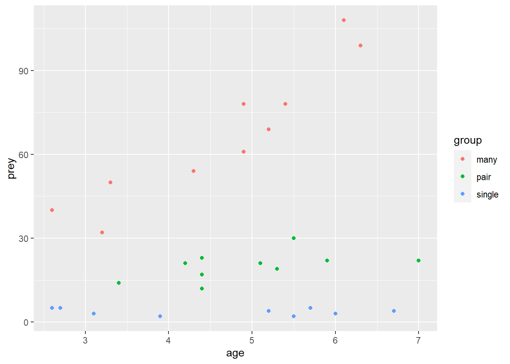

Chapter 4 Two explanatory variables
4.1 Introduction to the example
The number of insect prey caught by individuals of a particular bird species varies. In an effort to understand this variation, researchers recorded the number of prey an individual caught, its age (in years) and how it spent the majority of it’s time (as a single individual, in a pair or in a group of many). The data are in birds.txt.
| prey | age | group |
|---|---|---|
| 5 | 2.6 | single |
| 5 | 5.7 | single |
| 5 | 2.7 | single |
| 3 | 3.1 | single |
| 2 | 3.9 | single |
| 3 | 6.0 | single |
| 4 | 5.2 | single |
| 2 | 3.9 | single |
| 4 | 6.7 | single |
| 2 | 5.5 | single |
| 22 | 7.0 | pair |
| 12 | 4.4 | pair |
| 19 | 5.3 | pair |
| 23 | 4.4 | pair |
| 17 | 4.4 | pair |
| 14 | 3.4 | pair |
| 22 | 5.9 | pair |
| 21 | 5.1 | pair |
| 21 | 4.2 | pair |
| 30 | 5.5 | pair |
| 54 | 4.3 | many |
| 78 | 5.4 | many |
| 69 | 5.2 | many |
| 78 | 4.9 | many |
| 50 | 3.3 | many |
| 61 | 4.9 | many |
| 99 | 6.3 | many |
| 108 | 6.1 | many |
| 40 | 2.6 | many |
| 32 | 3.2 | many |
There are 3 variables: the response, prey, is the number of caught by an individual; age, gives the individual’s age in years (to one tenth of a year); and group indicates how the individuals spent the majority of its time.
We will import the data with the read_table2() function and plot it with ggplot().
We need to be able to show the different group behaviours
# a default scatter plot of the data
ggplot(data = birds, aes(x = age, y = prey, colour = group)) +
geom_point() Individuals that spend most of their time with many individuals catch more prey and this effect is increased with age. Individuals that spend most of their time alone do not seem to improve with age.
4.2 Applying and interpreting glm()
We build a generalised linear model of the number of cases explained by the distance with the glm() function as follows:
Printing mod to the console gives us the estimated model parameters:
mod
#
# Call: glm(formula = prey ~ group * age, family = poisson, data = birds)
#
# Coefficients:
# (Intercept) grouppair groupsingle age
# 2.794 -0.416 -1.406 0.293
# grouppair:age groupsingle:age
# -0.168 -0.323
#
# Degrees of Freedom: 29 Total (i.e. Null); 24 Residual
# Null Deviance: 849
# Residual Deviance: 21 AIC: 172\(\beta_{0}\) is labelled “(Intercept)” and \(\beta_{1}\) to \(\beta_{5}\) are labelled “grouppair”, “groupsingle”, “age”, “grouppair:age” and “groupsingle:age” Thus the equation of the line is:
The intercept is the log of the expected number of prey items caught by 0 aged birds that spend the majority of their time in a group of many. The fact that the estimate for grouppair (-0.416) is negative tells us that those in pairs aged 0 catch fewer. Aged 0 single birds also catch fewer. The positive coefficient for age indicates that more prey are caught with age.
To understand the parameters the on the scale of the response we apply the inverse of the \(ln\) function, the exp() function
exp(mod$coefficients)
# (Intercept) grouppair groupsingle age grouppair:age
# 16.338 0.660 0.245 1.340 0.845
# groupsingle:age
# 0.724So:
\(prey\) = 16.338 \(\times\) 0.66\(^{grouppair}\) \(\times\) 0.245\(^{groupsingle}\) \(\times\) 0.66\(^{grouppair}\) \(\times\) 0.845\(^{grouppair:age}\) \(\times\) 0.724\(^{groupsingle:age}\)
Birds aged 0 that spend most of their time with many others are expected to catch 16.338 prey. The paired birds aged 0 are expected to catch 16.338 \(\times\) 0.66 = 10.778 prey and the lone birds aged 0, 16.338 \(\times\) 0.245 = 10.778 prey.
Birds that spend most of their time with many others catch 1.34 times more prey with each year that they age.
More information including statistical tests of the model and its parameters is obtained by using summary():
summary(mod)
#
# Call:
# glm(formula = prey ~ group * age, family = poisson, data = birds)
#
# Deviance Residuals:
# Min 1Q Median 3Q Max
# -1.640 -0.667 -0.172 0.650 1.767
#
# Coefficients:
# Estimate Std. Error z value Pr(>|z|)
# (Intercept) 2.7935 0.1813 15.41 <2e-16 ***
# grouppair -0.4161 0.4078 -1.02 0.308
# groupsingle -1.4059 0.5949 -2.36 0.018 *
# age 0.2927 0.0354 8.27 <2e-16 ***
# grouppair:age -0.1685 0.0789 -2.13 0.033 *
# groupsingle:age -0.3226 0.1260 -2.56 0.010 *
# ---
# Signif. codes: 0 '***' 0.001 '**' 0.01 '*' 0.05 '.' 0.1 ' ' 1
#
# (Dispersion parameter for poisson family taken to be 1)
#
# Null deviance: 848.806 on 29 degrees of freedom
# Residual deviance: 21.048 on 24 degrees of freedom
# AIC: 171.8
#
# Number of Fisher Scoring iterations: 4The Coefficients table gives the estimated \(\beta s\) again but this time with their standard errors and tests of whether the estimates differ from zero. For example, The estimated value for the intercept is 2.794 \(\pm\) 0.181 and this differs significantly from zero (\(p\) < 0.001). The estimated value for \(\beta_{1}\) is -0.416 \(\pm\) 0.408 does not differ significantly from zero (\(p\) = 0.308). At age 0, birds in pairs do not catch significantly fewer prey.
Towards the bottom of the output there is information about the model fit. The null deviance (what exists if we predict the number of prey from the mean of birds in groups of many aged 0, \(\beta_{0}\)) is 848.806 with 29 degrees of freedom and the residual deviance (left over after our model is fitted) is 21.048 with 24 \(d.f.\). The model fits a five parameters and thus accounts for 5 \(d.f.\) for a reduction in deviance by 827.758.
To get a test of whether the reduction in deviance is significant for each term in the the model formula we use:
anova(mod, test = "Chisq")
# Analysis of Deviance Table
#
# Model: poisson, link: log
#
# Response: prey
#
# Terms added sequentially (first to last)
#
#
# Df Deviance Resid. Df Resid. Dev Pr(>Chi)
# NULL 29 849
# group 2 752 27 97 < 2e-16 ***
# age 1 66 26 31 4.1e-16 ***
# group:age 2 10 24 21 0.0071 **
# ---
# Signif. codes: 0 '***' 0.001 '**' 0.01 '*' 0.05 '.' 0.1 ' ' 1All three terms in the model significantly reduce the deviance: group (\(p\) < 0.001), age (\(p\) < 0.001) and the interaction between them (\(p\) = 0.007). This means that group size matters, age matters and the effect of age is not the same for individuals in groups of different sizes.
4.3 Getting predictions from the model
The predict() function returns the predicted values of the response. To add a column of predicted values to the dataframe: we need to specify they should be on the scale of the responses, not on the scale of the link function.
This gives predictions for the ages used. If you want predictions for other ages you need to create a data frame of the values from which you want to predict
To predict for ages 0, mean(age) and 7 for each group size we can use:
predict_for <- data.frame(group = rep(c("many", "pair", "single"), each = 3),
age = rep(c(c(0, mean(birds$age), 7)), times = 3))We want predictions for three ages so need to repeat the group name each three times. We repeat the list of ages three times because there are three group sizes. The result is:
| group | age |
|---|---|
| many | 0.0 |
| many | 4.7 |
| many | 7.0 |
| pair | 0.0 |
| pair | 4.7 |
| pair | 7.0 |
| single | 0.0 |
| single | 4.7 |
| single | 7.0 |
We then specify this dataframe in the predict() function using the newdata argument
| group | age | pred |
|---|---|---|
| many | 0.0 | 16.34 |
| many | 4.7 | 64.71 |
| many | 7.0 | 126.73 |
| pair | 0.0 | 10.78 |
| pair | 4.7 | 19.33 |
| pair | 7.0 | 25.70 |
| single | 0.0 | 4.00 |
| single | 4.7 | 3.48 |
| single | 7.0 | 3.25 |
This sort of information is helpful in explaining our results.
4.4 Creating a figure
ggplot(data = birds, aes(x = age, y = prey, colour = group)) +
geom_point() +
geom_smooth(method = "glm",
method.args = list(family = "poisson"),
se = FALSE) +
scale_color_manual(values = pal4, name = "Group size") +
scale_x_continuous(expand = c(0, 0),
limits = c(0, 7.5),
name = "Age (years)") +
scale_y_continuous(expand = c(0, 0.03),
limits = c(0, 110),
name = "Number of prey caught") +
theme_classic()

4.5 Reporting the results
There is a significant effect of group size (p < 0.001) on the number of prey items caught with averaged aged birds catching 64.7 prey if they spend their time in large groups, 19.3 prey for paired birds and only 3.5 prey for lone birds. There is also a significant effect of age (p < 0.001) overall but this varies for birds in different group sizes (p = 0.007). Birds in large groups improve by a factor of 1.34 for each year, paired birds by a factor of 1.132 and single birds not at all. See figure 4.1.
Figure 4.1: The effect of age and group size on the number of prey items caught by an individual. The line gives predictions for a GLM with Poisson distributed errors.